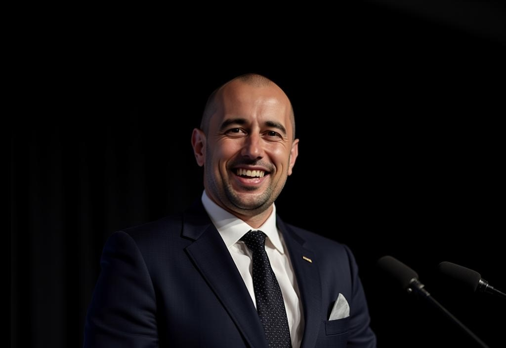
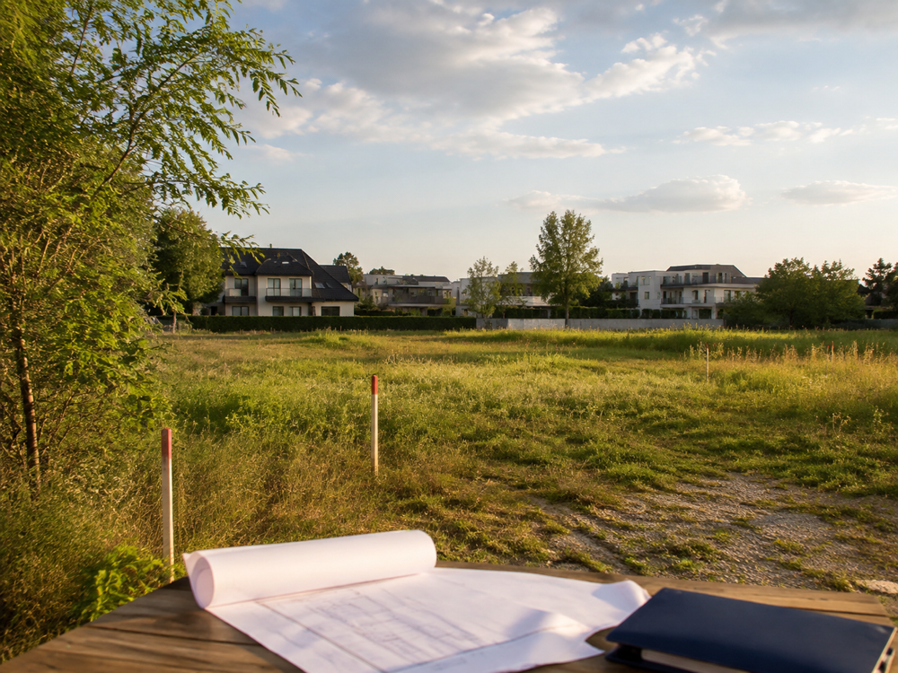
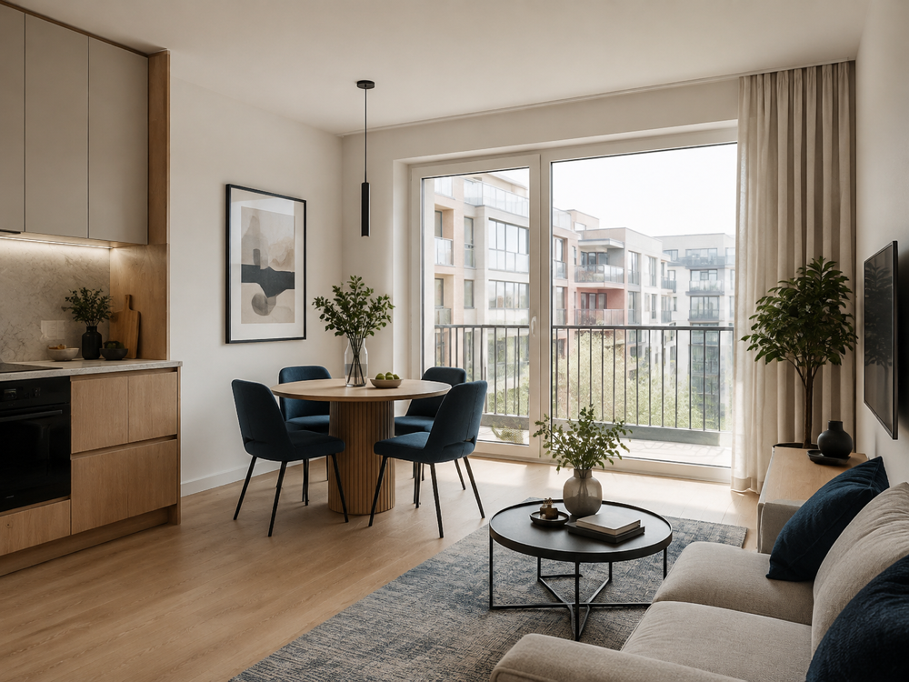
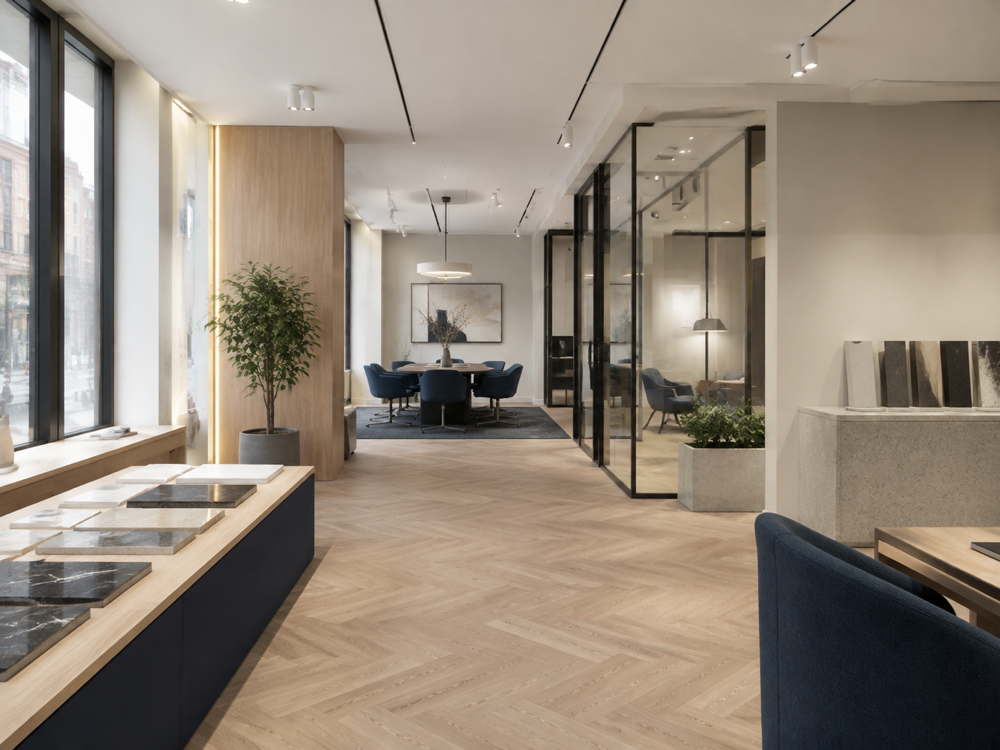

Rozpoznanie potrzeb
Definiujemy cel, model biznesowy lub inwestycyjny, budżet, lokalizację, termin oraz warunki konieczne.
DORADZTWO NIERUCHOMOŚCI
Pomagamy przełożyć pomysł na konkretny plan działania. Analizujemy potrzeby, rynek, potencjał nieruchomości i ryzyka, aby wybór lokalu, gruntu lub mieszkania inwestycyjnego był świadomy i dobrze przygotowany.

OD POTRZEBY DO DECYZJI
Każda nieruchomość ma inne zadanie. Lokal dla gabinetu musi odpowiadać profilowi działalności i wymaganiom technicznym. Restauracja potrzebuje odpowiedniego układu, instalacji i możliwości prowadzenia gastronomii. Grunt powinien pasować do planowanej inwestycji nie tylko ceną, lecz także przeznaczeniem i ograniczeniami.
Dlatego nie zaczynamy od wysyłania przypadkowych ofert. Ustalamy priorytety, budżet, harmonogram i warunki brzegowe. Następnie tworzymy kryteria wyboru, porównujemy warianty i koordynujemy konsultacje ze specjalistami potrzebnymi w danym procesie.
JAK PRACUJEMY
Wiesz, co sprawdzamy, dlaczego to robimy i na jakiej podstawie rekomendujemy kolejne kroki.
Definiujemy cel, model biznesowy lub inwestycyjny, budżet, lokalizację, termin oraz warunki konieczne.
Budujemy profil nieruchomości, ustalamy priorytety i plan weryfikacji dopasowany do konkretnego przedsięwzięcia.
Porównujemy rynek, stan prawny, parametry techniczne, potencjał i koszty. Odrzucamy oferty, które nie spełniają założeń.
Wspieramy w negocjacjach, organizujemy właściwych ekspertów i koordynujemy działania do bezpiecznej finalizacji.
OBSZARY DORADZTWA
Łączymy znajomość rynku z koordynacją analiz potrzebnych przy niestandardowych zakupach, najmie i inwestycjach.
LOKALE SPECJALISTYCZNE
Pomagamy określić wymagania wynikające z zakresu świadczeń i znaleźć przestrzeń, którą można funkcjonalnie dostosować. Analizujemy m.in. dostępność, układ pomieszczeń, instalacje, komunikację oraz możliwość konsultacji projektu z właściwymi specjalistami.
Poznaj szczegóły →GASTRONOMIA
Weryfikujemy potencjał lokalu pod planowany koncept: przeznaczenie, wentylację, zaplecze, dostawy, instalacje, sąsiedztwo i możliwości aranżacyjne. Pomagamy ograniczyć ryzyko wyboru przestrzeni, której adaptacja byłaby zbyt kosztowna lub niemożliwa.
Poznaj szczegóły →
GRUNTY INWESTYCYJNE
Koordynujemy analizę planu miejscowego lub warunków zabudowy, księgi wieczystej, dostępu do drogi, uzbrojenia, granic, ukształtowania terenu i możliwych ograniczeń. Zestawiamy ustalenia z celem inwestora i przewidywanymi kosztami.
Poznaj szczegóły →
INWESTOWANIE
Budujemy strategię od wyboru lokalizacji i dewelopera po typ, metraż i standard mieszkania. Analizujemy popyt najemców, konkurencję, koszty, możliwy czynsz, płynność odsprzedaży oraz sposób zarządzania inwestycją.
Poznaj szczegóły →
NIERUCHOMOŚCI KOMERCYJNE
Dobieramy nieruchomość do sposobu pracy, obsługi klientów i planu rozwoju firmy. Porównujemy lokalizację, dostępność, układ, koszty stałe, warunki najmu oraz elastyczność przestrzeni.
Znajdź przestrzeń dla firmy →ANALIZA ZAKUPU
Pomagamy uporządkować due diligence: dokumenty, otoczenie rynkowe, stan i potencjał nieruchomości, koszty dodatkowe oraz ryzyka transakcyjne. W razie potrzeby koordynujemy współpracę z prawnikiem, architektem lub rzeczoznawcą.
Skonsultuj nieruchomość →EKSPERCKIE WSPARCIE
Naszą rolą jest wiedzieć, jakie pytania zadać, co sprawdzić i kiedy zaangażować dodatkowego eksperta. Dzięki temu możesz porównać warianty w oparciu o fakty, a nie tylko pierwsze wrażenie.
ZACZNIJMY OD ROZMOWY
Zakup, najem, inwestycja albo lokal dla firmy — wspólnie określimy właściwy pierwszy krok.